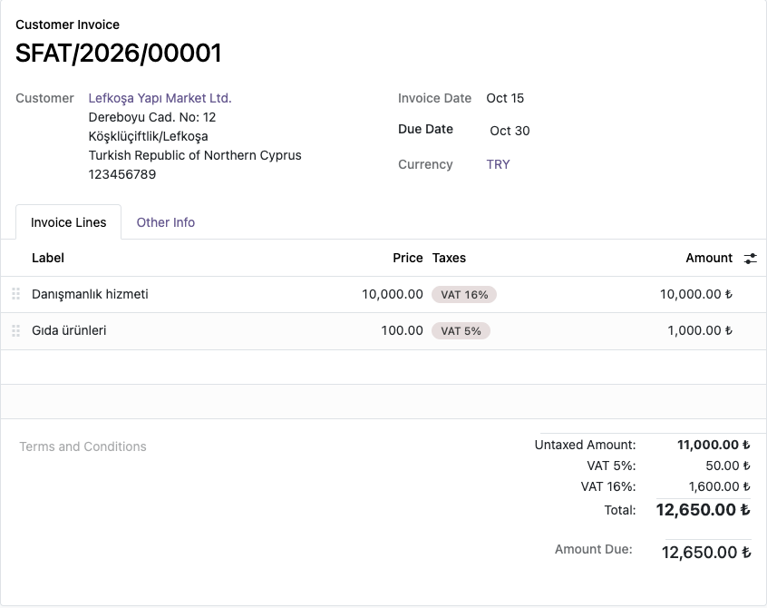
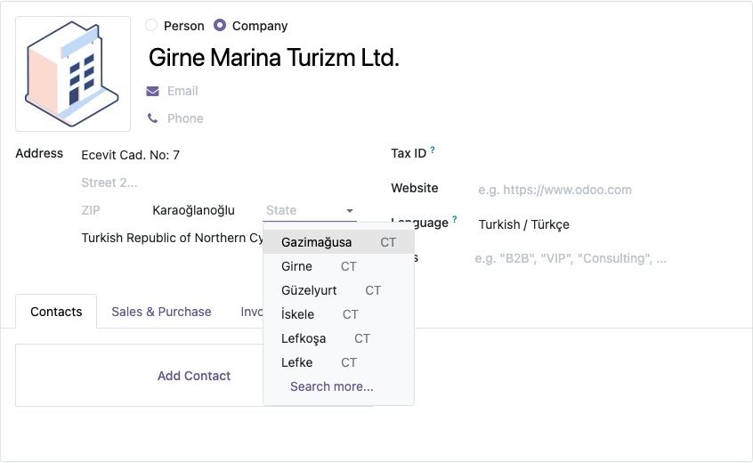

Odoo has no record for the Turkish Republic of Northern Cyprus (KKTC), so companies there have had to borrow another country and invent their own VAT rates. This module adds the country, its six districts, a chart of accounts and the KKTC VAT rates.
VAT rates: 0%, 5%, 10%, 16% (general rate) and 20%, posted to 391 / 191.
The chart can only be changed before the company has accounting entries.


Odoo 18.0 (tested on Community). Depends on l10n_tr for the account list. No external
service is used. KKTC has no ISO 3166 code; the module uses CT, so services that
only accept ISO codes (some payment providers, for example) may not recognise the country.
VAT rates follow the 2025 VAT Rates Regulation of the KKTC tax office. Licensed under LGPL-3.
Questions and bug reports: destek@odoo-tr.com
Odoo'da Kuzey Kıbrıs Türk Cumhuriyeti hiç yoktu; KKTC'deki şirketler başka bir ülke seçip KDV oranlarını kendileri tanımlıyordu. Bu modül ülkeyi, altı ilçeyi, hesap planını ve KKTC KDV oranlarını ekler.
Kurulum: modülü kurun, şirketin ülkesini Kuzey Kıbrıs Türk Cumhuriyeti yapın, Ayarlar > Faturalama altında Mali Yerelleştirme olarak KKTC Tek Düzen Hesap Planı'nı seçip kaydedin.
Sorular ve hata bildirimleri: destek@odoo-tr.com